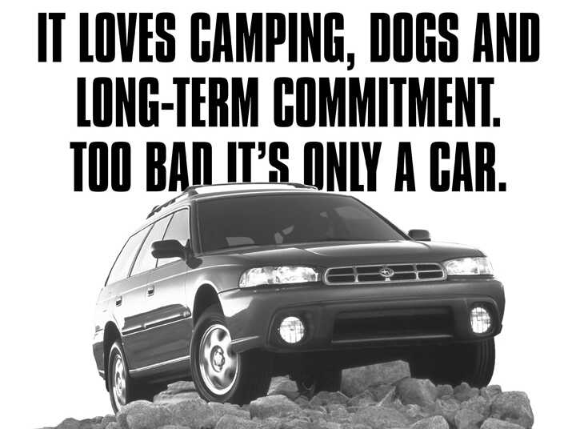

Caption goes here
Subaru's marketing strategy had just died in a fit of irony.
It was the mid 1990s, and sales of Subaru cars were in decline. To reverse the company's fortunes, Subaru of America had created its first luxury car—even though the small automaker was known for plain but dependable cars—and hired a trendy advertising agency to introduce it to the public.
The new approach had fallen flat when the ad men took irony too far: One ad touted the new sports car's top speed of 140 MPH, then asked, “How important is that, with extended urban gridlock, gas at $1.38 a gallon and highways full of patrolmen?”
After firing the hip ad agency, Subaru of America changed its approach. Rather than compete directly with Ford, Toyota, and other carmakers that dwarfed Subaru in size, executives decided to return to its old focus on marketing Subaru cars to niche groups—like outdoorsy types who liked that Subaru cars could handle dirt roads.
This search for niche groups led Subaru to the 3rd rail of marketing: They discovered that lesbians loved their cars. Lesbians liked their dependability and size, and even the name “Subaru.” They were four times more likely than the average consumer to buy a Subaru.
This was the type of discovery that the small, struggling automaker was looking for. But Subaru had been looking for niche groups like skiers and kayakers—not lesbian couples. Did the company want to make advertisements for gay customers? At the time, in the mid 1990s, few celebrities were openly out. A Democratic president had just passed “Don't Ask, Don't Tell”, and after IKEA aired one of the first major ad campaigns depicting a gay couple, someone had called in a bomb threat on an IKEA store.
Yet Subaru decided to launch an ad campaign focused on lesbian customers. It was such an unusual decision—and such a success—that it pushed gay and lesbian advertising from the fringes to the mainstream.
If you've ever wondered why people joke about lesbians driving Subarus, the reason is not just that lesbians like Subarus. It's that Subaru cultivated its image as a car for lesbians—and did so at a time when few companies would embrace or even acknowledge their gay customers.
You Are What You Drive
How do you advertise a car that journalists describe as “sturdy, if drab”?
That was the question faced by Subaru of America executives in the 1990s. After attempts to reinvigorate the company's declining sales with a sports car and a hip, young ad agency failed, they turned to their niche marketing strategy.
“That was and still is a unique approach,” says Tim Bennett, who worked as Director of Advertising. “I'm always amazed that no one copied it.” Instead of fighting every other car company over the same demographic of white, 18- to 35-year-olds living in the suburbs, Subaru would target niche groups of people who particularly liked Subarus.
In the 1990s, Subaru's unique characteristic was that the company increasingly made all-wheel-drive standard on all its cars. When Subaru marketers went searching for people willing to pay a premium for all-wheel-drive, they identified four core groups who were responsible for half of the company's American sales: teachers and educators, healthcare professionals, IT professionals, and “rugged individualists” (outdoorsy types).
Then they discovered a 5th: lesbians.
“When we did the research, we found pockets of the country like Northampton, Massachusetts, and Portland, Oregon, where the head of the household would be a single person—and often a women,” says Bennett. When Subaru marketers talked to these customers, they realized these women buying Subarus were lesbian.
“There was such an alignment of feeling, like [Subaru cars] fit with what they did,” says Paul Poux, who later conducted focus groups for Subaru. The marketers found that lesbian Subaru owners liked that the cars were good for outdoor trips, and that they were good for hauling stuff without being as large as a truck or SUV. (In a line some women may not like as much, marketers also said Subaru's dependability was a good fit for lesbians since they didn't have a man who could fix car problems.) “They felt it fit them and wasn't too flashy,” says Poux.
Many of them even felt an affinity with the name.
'Subaru' is the Japanese name for the Pleiades, a six-star constellation. When Kenji Kita, the CEO of Subaru's parent company, Fuji Heavy Industries, chose the name in 1954, he chose it to represent how six Japanese companies had merged to form Fuji Heavy Industries. But in English, the constellation is also known as the Seven Sisters—the same name as a group of American women's colleges.
Of all the niche groups, lesbians may have exhibited the most fervor. “These women were practically commercials for Subaru,” John Nash, the creative director of the ad agency that ultimately made Subaru's gay and lesbian advertisements, recalled in 2004.
Subaru's strategy called for targeting these 5 groups and creating ads based around its appeal to each. For medical professionals, it was that a Subaru with all-wheel-drive could get them to the hospital in any weather. For rugged individualists, it was that a Subaru could handle dirt roads and haul gear. For lesbians, it was that a Subaru fit their active, low-key lifestyle.
But it was easier to get senior management on board with making ads for hikers than for lesbians.
Caption goes here
From Subaru to 'Lesbaru'
Talking with people involved in Subaru's 1990s marketing campaign, the constant refrain is how different the environment was back then.
“I can't emphasize enough that this was before there was any positive discussion [of LGBT issues],” says Tim Bennett. Gay causes seemed to be on the losing side of the culture war: the Clinton Administration had just created its “Don't Ask, Don't Tell” policy regarding homosexuality in the military, and in 1996, Congress would pass the Defense of Marriage Act.
Pop culture had also yet to embrace the LGBT cause. Mainstream movies and TV shows with gay characters—like Will & Grace—were still a few years away, and few celebrities were openly gay. When Ellen Degeneres became a rare exception in 1997, and her character in the show Ellen came out as gay in an episode of the sitcom, many companies pulled their ads.
”We don't think it is a smart business decision to be advertising in an environment that is so polarized,” a spokesperson for Chrysler explained after the company pulled its ads. ”The environment around this is so angry we feel we lose no matter what we do.”
Gay-friendly advertising was largely limited to the fashion and alcohol industries. When a 1994 IKEA ad featured a gay couple, the American Family Association mounted boycotts, and someone called in a (fake) bomb threat on an IKEA store.
As marketer Paul Poux explains, the attitude of most businesses toward LGBT advertising was: “Why would you do something like that? You'd be known as a gay company.”
In the 1990s, Poux worked at Mulryan/Nash, an agency that specialized in the gay market. Early in his career, he made cold calls to ask companies for their business. “All the rules of marketing went out the window at this fear” of marketing to gays and lesbians, he says. “People would choke up on the phone. It was tough.”
It was in this context that Subaru marketers like Tim Bennett and Director of Marketing Tim Mahoney hired Mulryan/Nash, the ad agency, and pitched Subaru's Japanese management on ads for lesbian customers. Reporter Ron Dicker ably captured some of the cultural confusion that followed:
“It was certainly a learning process for everybody,” says Bennett.
According to Bennett, who is gay, they never faced disrespect within Subaru. But Bennett did not reveal his sexual orientation, fearing it would overshadow the effort, and it took a year and a half to get everyone at Subaru onboard. For a car company, openly marketing to gay customers still felt new, if not taboo. Bennett recalls holding company meetings with names along the lines of “Who Are Gays and Lesbians?”
A fifty-year-old business conglomerate like Fuji Heavy Industries, the parent company of Subaru, is not normally where you'd look for a leader in social progress. But the corporate environment did have its advantages.
For starters, there was a great business case for the marketing campaign. Subaru was struggling, and its niche marketing campaign was plan A for redemption.
The internationalism of global business also had its advantages. The Subaru team knew they had to support their gay and lesbian employees if they wanted to appeal to lesbian customers. So they scheduled a meeting with a senior Japanese executive to make the case for domestic partnership benefits.
Bennett and his colleagues had prepared to argue their case at length, but the meeting lasted 20 seconds. The executive, who had worked for Subaru in Canada, already knew about benefits for same-sex couples. “He said, 'Yeah that's fine. We did that in Canada years ago. Anything else?’” says Bennett. “It was the easiest thing we did.”
By 1996, Subaru ads created by the Mulryan/Nash ad agency were appearing both in gay publications and mainstream media.
Although the marketing team worried about conservatives mounting a boycott, Subaru developed a public stance: Since Subaru sold cars to a “diverse and well educated” group of people, their customers wouldn't be offended by the ads.
Inside Subaru of America, though, not everyone was united on the effort. There was public backlash, and Tim Bennett says the campaign survived naysayers inside Subaru only because their team really cared about the project and had the support of straight allies in the company.
And the Subaru company line did have some truth to it. In response to the ads, Subaru received letters from a grassroots group that accused the carmaker of promoting homosexuality. Everyone who penned a letter said they'd never buy a Subaru again.
But the marketing team quickly discovered that none of the people threatening a boycott had ever bought a Subaru. Some of them had even misspelled “Subaru.”
Like nerds who grow up to confront their bullies, Subaru executives realized that the people opposing the acknowledgement of gays and lesbians were not as imposing as they seemed.